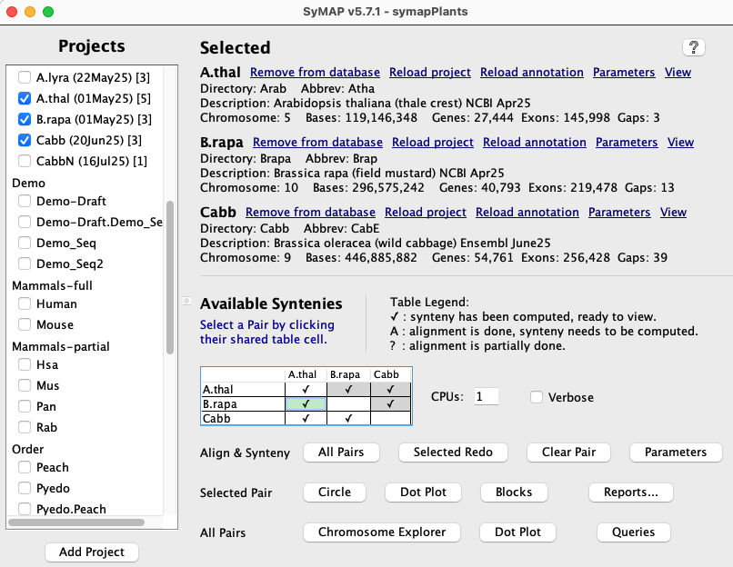

|
|
System Quick Guide
and Parameters |


| |
| |||
For the first time user of SyMAP, read the System Guide to try the demo and learn details of the input files. This document provide details of parameters and functions.
Contents:
| 1. Build database | 2. Project Parameters | 3. Pair Parameters |

1. Build database
This provides a quick summary of the build functions. See System Guide for details.
| Sections: | Selected | Available Synteny | Function buttons |
1.a Selected | Go to top |
The projects selected from the
| ♦ If there is any project not loaded to the database, you will see: | |||||||||||||||||||
| Load all projects that have not been loaded yet.
| ♦ If a project is not loaded to the database, you will see:
|
| Remove your files from disk. The project will no longer be shown on the left.
|
| Loads the sequence and optional annotations to the database.
After loading results,
always verify them by selecting the View link, which
provides a summary of what has been loaded.
|
| This brings up a panel of parameters, see Project Parameters.
After the project is loaded, you can still change the | ♦ If a project is loaded into the database, you will see:
|
| The sequences and annotation will be removed, but the files stay on disk.
|
| Executes | If there are alignment files, you will be asked if you want them removed; see parameters to determine whether they should be removed.
| Removes the annotation from the database then load the annotations.
| The
| This brings up the project parameters panel.
| | ||
1.b Available Syntenies | Go to top |
This section shows a table with the status of alignments between the selected loaded projects. Each cell in the table represents a pair of projects and the cell contains a status code showing whether or not that pair has been aligned (codes are listed below). Note that the table shows each pair cell twice, but only the lower cells are activated.
Clicking on a cell selects that pair of projects (the cell will be highlighted in green).
| Code | Description |
| ✔ | Synteny for this project pair is ready to view. |
| A | The MUMmer alignment has been performed but the synteny computation has not been run. This status occurs if a pair is completed but then annotations are re-loaded for one of the projects, or if the MUMmer files have been added by the user. |
| ? |
The alignment have not been completed. In this case, select |
| The alignment has not been started. |
1.c CPU and Concat | Go to top |
1.d Function Buttons | Go to top |
| Alignment&Synteny (A&S) | |||||||
|
Run (or complete) the synteny computation for all pairs in the |
|
Run (or complete) the | If the pair is already complete, the button label changes to If you wish to rerun the MUMmer alignment, first use the
|
You will be prompt whether you want:
| (1) remove synteny from the database only, or (2) remove synteny from the database and remove alignments.
|
Set the pair parameters for the selected pair cell .
| |
For the remaining display buttons, see User Guide.
2. Project Parameters | Go to top |
| Sections: | Overview | Display | Load project | Load annotation | Alignment&Synteny (A&S) | Save | Annotation |
2.a Overview
|
Click the Parameters link to open the Parameters window shown on the lower right.
Make sure the following parameters are set correctly before running the Alignment&Synteny (A&S) step. Load project:
If any of these need to be changed after
Default locations:
|

|
2.b Display | Go to top |
| Parameter | Description | Default Value |
| |
Category label for the project. This is only used to group project on the
left side of the | Uncategorized |
| | A user-friendly name for the project. Use any combination of letters, digits and dash. Shorter names will work better in the displays. It must be unique for the category. | The project directory name. |
| | A name (must be exactly 4 characters) to be used in the column headings for | Last 4 characters of |
| | Description of the project. This is only shown in the | |
| | How to refer to the sequences. This is shown on the | Chromosome |
| | This applies to the annotation attributes columns shown in the | 50 |
2.c Load project | Go to top |
The term "Group" is used for any sequence type, e.g. chromosome, scaffold, contig.
| 
|
- You may remove the prefix after the project is loaded. For example, if your sequences had
names "Scaf1", "Scaf2", etc, and "Scaf" was NOT entered as the
Group prefix before load, you may enter it later and it will be removed from all sequence names. However, this is not reversible and a prefix cannot be added to the sequence names.
Minimum length of a group sequence to load; smaller sequences will be ignored. Note that annotations
for ignored sequences will also be ignored, but some error messages will be printed to the terminal.
Select the input FASTA sequence file(s), or directories of sequence files.
For formatting, see Sequence files.
Default location: data/seq/<project-name>/sequence
If any of the above 3 are changed:
▸ If the project has already been loaded,
▸ If
2.d Load annotation | Go to top |
A comma separated list of keywords. This can be used to reduce the annotation attribute keywords shown in the
Select the input GFF3-formatted annotation files corresponding to your sequences. Note, using
a GFF3 file directly can cause problems; see
Annotation files.
Annotation is optional but highly recommended. Default location: data/seq/<project-name>/annotation
If either of the above are changed:
▸ If the annotation has already been loaded,
▸ If
2.e Alignment&Synteny (A&S) | Go to top |
Mask out all non-genic parts of the sequences before running MUMmer (gene annotation must be provided). This can save time but prevents non-annotated anchors from being found. Also, this has become less relevant since the
▸ If this is changed after
For draft contig sets, this allows you to order them using synteny to
one of the other projects.
See Ordering details.
▸ If the draft has been aligned to the
2.f Rules for saving project parameters | Go to top |
data/seq/<project-name>/paramsWhen the project is loaded, all parameters are saved to the database except the
When the
Any parameter not the defaults will be shown on the
The params file parameters are shown on the Parameters window. These can only be
viewed and changed using
2.g Annotation
The gene annotation is shown on the 2D display and as columns in the Queries results table. The annotation comes from the last column, called attributes, for each gene in the GFF file. The attributes is a keyword=value list, e.g.ID=gene-AT1G01010;Name=NAC001;ID=rna-NM_099983.2;product=NAC domain containing protein 1Defaults: Generally, all genes in a file have the same keywords, in which case, use the defaults. This will cause the entire attribute to be shown for the gene in the
If there are many different keywords in the attribute list, this causes too many columns in the
3. Pair Parameters | Go to top |
| Sections: | Overview | Alignment | Cluster Hits | Synteny | Save | MUMmer parameters |
3.a Overview
| Select a pair cell in the | 
|

|
If a ✔ or A in pair cell exists, and the parameters are changed, do the following:
The parameters are described in the following three sections. The most important parameter is for |
3.b Alignment | Go to top |
| Parameter | Description | Default |
| | Arguments for PROmer1 | |
| | Arguments for NUCmer1 | |
| | Arguments to use when aligning a chromosome to itself.2 | |
| | Use PROmer for all alignments.3 | Off |
| | Use NUCmer for all alignments.3 | Off |
1BEWARE: Entered PROmer and NUCmer arguments are NOT checked for correctness.
2When self-alignment is performed, standard arguments are used when comparing different chromosomes. However, additional arguments may be desired when a chromosome sequence is run against itself, e.g. --nosimplify.
3 By default, PROmer is used for alignments between different projects, while NUCmer is used for self alignments.
3.c Cluster Hits | Go to top |
Pros This is an generic algorithm that has knowledge of genes versus intergenic hits. It is recommended for ordering sequence contigs and when there are little or no gene annotation. It must be used for self-synteny. It has been used on 100's of genome comparisons.
Cons It does not distinguish between exon and intron hits. It is more likely to miss good homologous gene pairs.
Parameters It does not need parameter adjustment. However, this gives no control over what hits are filtered.
Pros This is a new algorithm that has explicit knowledge of gene pairs and their exon-intron structure, and shows all gene pairs with
hits unless filtered by the parameters (and a few internal filters).
It has better filtering for small intergenic and intron-only hits.
Cons It does not perform self-synteny or take NUCmer files as input.
It does not work when a given chromosome is split over multiple MUMmer files
(this will not happen when SyMAP generates the MUMmer files).
Parameters The parameters generally will need adjusting. However, this gives more control over what gene pairs
are shown and can surpress the minor intergenic hits. See Hints
below the parameter explanation.
| Parameter | Description | Default | ||||||||||||||||||
| Yes | ||||||||||||||||||||
| | It will retain the top N hits of a piled region, as well as all hits with score at least 80% of the Nth hit. | 2 | ||||||||||||||||||
| No | |||||||||||||||||||
| | If the hit is | 100 | ||||||||||||||||||
| | If the hit is | 300 | ||||||||||||||||||
| | If the hit is Increase this parameter for conserved genomes. | 600 | ||||||||||||||||||
| | •This ONLY applies when there is a pile of overlapping hits (Pile of Hits); it tells the algorithm what type of cluster hits to retain if they are in a pile. •Hits are filtered before pile analysis. •Intergenic-intergenic pile hits, and any unchecked categories, are filtered as described in the next row.. | |||||||||||||||||||
| | 2 | |||||||||||||||||||
Hint for Algorithm 1: Increasing the
Hint for Algorithm 2: On the output to the terminal, if any chromosome pair shows over 10,000 hits, the
parameters probably need to be made more stringent; too many hits (and piles) confuses the synteny algorithm, which results
in synteny blocks not being found; it also results in very long execution time.
For highly similar genomes, it is necessary to increase the


Running with ./symap -s provides additional output for both algorithms.
Wrong orientation
It can happen that all hits in a cluster can have the same strand (+/+ or -/-), yet the cluster aligns to a positive and negative gene (or vice versa). By default, Algo2 includes these hits and writes the count to the terminal, e.g.6,736 Both Genes - cluster strands differ from gene (Multi 1,425, Single 5,311)If you would like to have them excluded or printed, use one of the following.
./symap -wse | # exclude
| ./symap -wsp | # print to terminal
| ./symap -wsp >ws.log | # print to file ws.log
| |
You can view them in
the
3.d Synteny | Go to top |
| Parameter | Description | Default |
| | Minimum number of anchors required to define a synteny block. | 7 |
| | Merge overlapping (or nearby) synteny blocks into larger blocks. | Off |
Selecting


{kind=link}
{kind=link}
3.e Rules for saving pairs parameters | Go to top |
data/seq_results/<proj1-to-proj2>/paramsOnce the
The file parameters are shown on the pair
Any parameter not the default will be shown on the
BEWARE: If you run
3.f MUMmer parameters
The arguments for MUMmer are NOT checked for correctness.To see the parameters for the default MUMmer V3 on MacOS, from the symap directory:
./ext/mummer/mac/mummer -h ./ext/mummer/mac/promer -h ./ext/mummer/mac/nucmer -hTo see the parameters for the default MUMmer V3 on Linux:
./ext/mummer/linux/mummer -h ./ext/mummer/linux/promer -h ./ext/mummer/linux/nucmer -hIf you compiled V4 in the /ext directory:
./ext/mummer4/m4/bin/mummer -h ./ext/mummer4/m4/bin/promer -h ./ext/mummer4/m4/bin/nucmer -hFor a detail discussion of MUMmer running in SyMAP, see MUMmer.